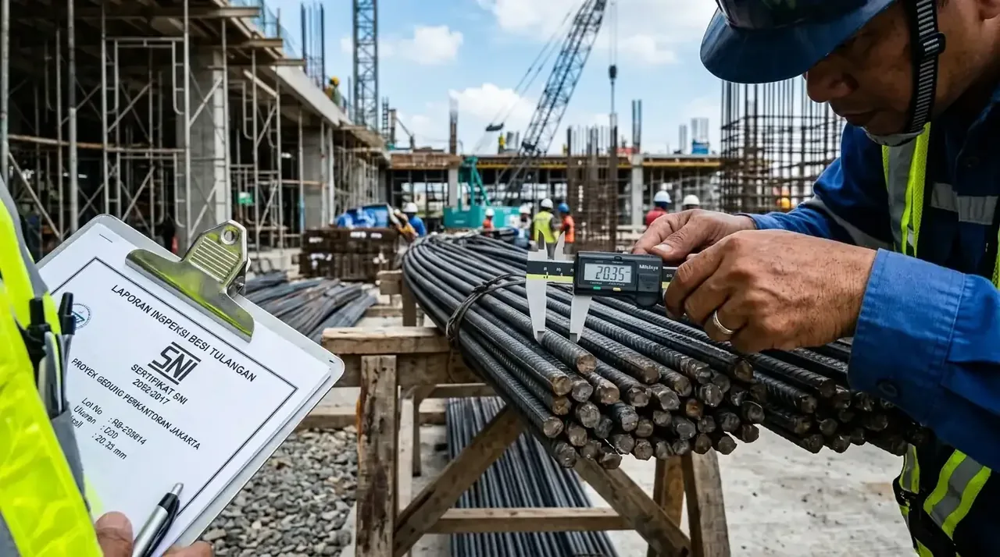

Bagaimana Langkah Praktis Memilih Besi Beton yang Kuat untuk Struktur Bangunan?
Langkah praktis memilih besi beton yang kuat diawali dengan memeriksa cetakan timbul (emboss) merek produsen, mengukur ketebalan fisik menggunakan jangka sorong digital, serta mencocokkan dokumen Mill Test Certificate resmi.
Pemilihan material baja tulangan yang tidak cermat berisiko fatal terhadap keutuhan kolom dan balok cor. Dalam proses inspeksi material, empat parameter utama wajib diperiksa secara teliti:
| Parameter Fisik & Teknis | Kriteria Standar SNI 2052:2017 | Risiko Jika Menggunakan Produk Non-SNI |
|---|---|---|
| Tanda Markah (Embos) | Cetakan timbul merek, diameter, dan kelas baja (misal: SNI, BjTS 420B). | Fisik polos tanpa identitas pabrikan atau cetakan tulisan pudar. |
| Toleransi Diameter | Presisi tinggi dengan ambang penyimpangan maksimal 3% - 7%. | Diameter aktual menyimpang jauh di atas 10% (besi banci). |
| Ketahanan Tarik & Leleh | Teruji di laboratorium dengan kuat leleh minimal 280 - 520 MPa. | Baja getas, mudah patah saat dibengkokkan, dan tidak daktil. |
| Sertifikat Pabrik (Mill Test) | Melampirkan dokumen resmi pengujian nomor leburan (heat number). | Tidak memiliki jaminan mutu dan asal-usul leburan bahan baku. |
Pengujian menyeluruh terhadap empat kriteria di atas memastikan bahwa kerangka beton bertulang mampu menahan kombinasi gaya tarik dan gaya geser secara maksimal.
- Uji Bengkok 180 Derajat (Bend Test): Besi beton berstandar SNI yang daktil tidak akan mengalami retak atau patah di bagian tekukan saat ditekuk 180 derajat.
- Ukur Berat per Meter: Timbang potongan besi sepanjang 1 meter dan cocokkan dengan tabel berat teoritis SNI untuk mendeteksi besi banci dengan cepat.
- Periksa Keseragaman Ulir: Pada besi ulir (BjTS), pastikan sirip memiliki jarak dan ketinggian yang teratur untuk daya cengkeram optimal pada cor semen.
Apa Saja Jenis Besi Beton Standar dan Kapan Harus Digunakan?
Jenis besi beton standar terdiri dari baja tulangan polos (BjTP) yang digunakan untuk begel sengkang serta baja tulangan sirip/ulir (BjTS) yang dikhususkan untuk tulangan utama penahan beban struktur.
Penjelasan penempatan komponen baja tulangan dalam proyek konstruksi gedung:
- Baja Tulangan Polos (BjTP): Memiliki profil permukaan licin dengan kelas kuat leleh minimum 280 MPa. Sangat ideal dimanfaatkan sebagai sengkang pengikat untuk mencengkeram tulangan utama agar tidak bergeser saat pengecoran beton berlangsung.
- Baja Tulangan Sirip / Ulir (BjTS): Memiliki ulir terpuntir melintang dengan kelas kuat leleh minimum 420 MPa hingga 520 MPa. Pilihan utama untuk struktur kolom utama, balok lantai, dan pondasi cakar ayam karena memiliki daya lekat (bonding) tinggi terhadap adukan beton cor.

Pemeriksaan diameter besi beton menggunakan jangka sorong digital oleh tim Kontraktor Bangunan untuk memastikan presisi dimensi sesuai SNI 2052:2017.
Mengapa Mempercayakan Pengadaan Material Kepada Kontraktor Bangunan Lebih Menguntungkan?
Mempercayakan pengadaan dan perakitan besi beton kepada Kontraktor Bangunan profesional memberikan jaminan bahwa seluruh material yang dikirim ke lokasi pengerjaan telah lolos uji petik diameter serta mengantongi sertifikat SNI resmi.
Keuntungan strategis menggunakan pelaksana konstruksi terpadu:
- Inspeksi Kualitas Ketat di Lapangan: Tim teknis melakukan pengukuran sampel fisik mengandalkan jangka sorong presisi sebelum material dirakit ke kerangka pembesian.
- Bebas Risiko Besi Banci: Menjamin seluruh pasokan baja dipesan langsung dari distributor resmi pabrikan baja terkemuka di Indonesia dengan dokumen Mill Test Certificate lengkap.
- Perakitan Pembesian Sesuai Gambar Kerja: Merakit kerapatan sengkang dan tulangan utama secara presisi mengikuti analisis insinyur sipil demi keamanan dan ketahanan gedung terhadap beban gempa.
Untuk memastikan kekuatan struktur gedung serta efisiensi anggaran belanja proyek Anda, menyerahkan pemilihan dan pengerjaan material kepada Kontraktor Bangunan adalah keputusan paling tepat.
Apa Saja Bahaya Utama Menggunakan Besi Beton Non-SNI (Banci)?
Bahaya utama penggunaan besi beton non-SNI adalah memicu keruntuhan bangunan secara mendadak (brittle failure) karena material tidak memiliki daya renggang yang cukup saat menerima guncangan gempa.
Dampak buruk yang ditimbulkan oleh material di bawah standar:
- Lendutan Pada Balok Cor: Diameter besi yang terlalu kecil membuat balok cor melengkung ke bawah saat menahan beban hidup gedung, merusak estetika dan keamanan ruang.
- Retak Struktur Dinding: Pergeseran kerangka baja di dalam beton memicu retakan menjalar pada pasangan dinding bata dan lapisan plesteran semen.
- Kekurangan Tebal Selimut Beton: Ukuran besi yang tidak presisi mengganggu kerapatan begel sehingga besi mudah mengalami korosi akibat kelembapan udara.
FAQ seputar Cara Memilih Besi Beton yang Kuat
Kesimpulan Praktis
Penerapan cara memilih besi beton yang kuat dan sesuai standar SNI merupakan langkah krusial untuk menjamin keselamatan jiwa dan daya tahan bangunan gedung. Memastikan kualitas material sejak awal mengamankan nilai investasi properti Anda untuk jangka panjang. Wujudkan kerangka bangunan yang kokoh, presisi, dan aman dari risiko struktur. Hubungi tim Kontraktor Bangunan kami sekarang untuk konsultasi teknik dan pengadaan material standar SNI terbaik!